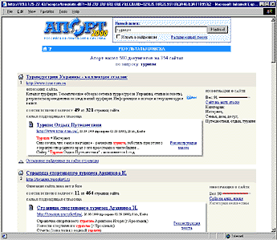
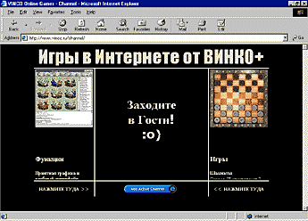
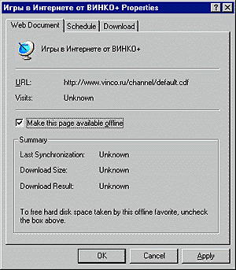
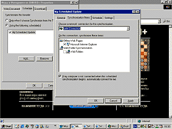
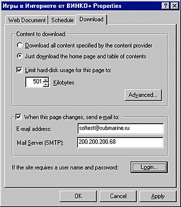
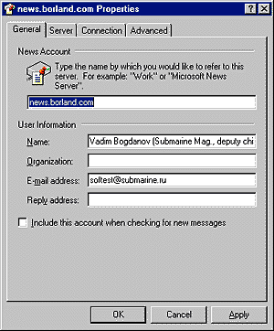
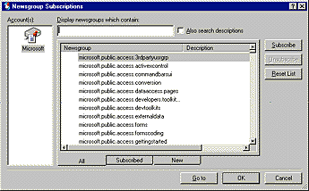
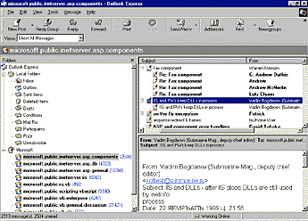
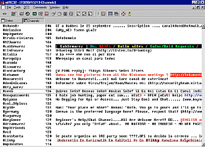

Internet для увлеченного человека
Вадим Богданов, Василий Иванченко
К Сети можно относиться по-разному. Кто-то считает ее незаменимым помощником
в работе, кто-то - средством развлечения, а для кого-то это лучший способ узнать
больше о своем хобби. О том, как быстро находить в Internet информацию о ваших
увлечениях и друзей со схожими интересами, и пойдет речь в этой статье.
Увлеченный человек странен для окружающих, не разделяющих его хобби. Успехи в
моделировании машинок или последнее приобретение для коллекции аквариумных рыбок
могут по достоинству оценить только люди с теми же интересами. И одной из
проблем, с которыми сталкивается человек с редким увлечением, является поиск
других людей со схожим хобби, которые могут помочь советом, рассказать что-то
интересное, наконец, по-хорошему позавидовать достигнутому; не менее важно и
быть в курсе последних событий.
Одним из наиболее удобных способов удовлетворения насущных проблем человека
увлеченного сегодня является Сеть. Но и в ней найти актуальную информацию о
своем увлечении или новых знакомых, как правило, достаточно сложно, особенно
если ваше хобби не столь распространено. Эту задачу можно упростить, зная где и
как искать. Об этом мы сейчас и поговорим.
Поисковые системы
Путешествуя по Сети, нетрудно убедиться, что в Internet находится достаточно
большое количество домашних страничек, посвященных всевозможным хобби. Наиболее
эффективным средством поиска домашних страничек являются поисковые системы. Но
перед тем, как начать работать с ними, надо усвоить, что поисковые системы
бывают двух видов, использующихся для разных целей: системы, которые пополняются
автоматически, и те, которые обновляются вручную.
Поисковые машины (search engines) с ручным обновлением называются
"рубрикаторами" или "каталогами", например всем известный Yahoo! является именно
рубрикатором. Если вы хотите, чтобы ваш сайт попал в каталог, вы заполняете
анкету на Web-странице, которую потом вручную проверяет сотрудник сервера и
заносит информацию о вашем сайте в нужную рубрику базы данных.
Поисковые машины, пополняемые автоматически, снабжены программой-"пауком",
которая постоянно "ползает" по паутине Internet и собирает информацию о
страничках автоматически, без участия человека. Пример такой системы -
популярная русская система Яndex.
Надо сказать, что на самом деле каталоги тоже пользуются
программами-"пауками", но не для поиска новых страниц, а для проверки, не
устарело ли их содержимое. Если вдруг окажется, что занесенной в базу странички
уже не существует, ее адрес удаляется.
В чем же разница между этими двумя типами поисковых систем? Начнем с
возможностей поиска. Когда вы работаете с каталогом, то ваш поиск осуществляется
в описаниях сайтов, проверенных вручную, тогда как в случае работы с
автоматически пополняемой системой описания сайтов генерируются программой на
основе анализа документа, и в этом случае полученное описание не всегда
соответствует действительному содержанию странички. Таким образом, результат
поиска в каталоге обычно в большей степени соответствует запросу.
С другой стороны, работая с автоматически обновляемой системой, вы всегда
можете быть уверены в том, что база данных, в которой вы осуществляете поиск,
актуализована (обычно она обновляется раз в 2-3 дня). А вот база данных каталога
зависит от его популярности, активности пользователей и скорости работы
персонала. И если вы, например, ищете сайт для любителей вышивания крестиком в
каталоге Yahoo!, а владелец сайта зарегистрировал его в каталоге Lycos, то вы,
возможно, не узнаете о существовании такого ресурса...
Стоит иметь в виду, что ни одна поисковая система по запросу не выдаст вам
100% всех ссылок. Такие внутренние ограничения вводятся по ряду причин, например
для того, чтобы одна поисковая система не воровала ссылки из другой: ни для кого
не секрет, что один из популярных способов автообновления базы данных - не поиск
по Internet, а поиск по другим крупным поисковым системам. При работе с
каталогом вы можете перемещаться по рубрикам. Тогда вы видите 100% всех ссылок,
зарегистрированных в ней. Соответственно, если вы найдете рубрику, в достаточной
степени соотносящуюся с вашими интересами, вы можете получить сразу всю
доступную информацию (и без "мусора", что немаловажно).
"Апорт 2000"
В процессе поиска англоязычных домашних страничек, посвященных вашему хобби,
для эффективности лучше работать сразу с несколькими search engines. Если же вы
ищете странички на русском языке, то вам будет достаточно одной. Ситуация
уникальна: пожалуй, впервые в истории развитии Internet русский сектор Сети
предлагает пользователям сервис, не имеющий аналогов в мире. Этот сервис
предоставляет поисковая система "Апорт 2000".
Истоки преимущества "Апорта" заключаются в его тесном сотрудничестве с
каталогом русских ресурсов Internet @RUS (экс-Ау!). Поэтому "Апорт 2000"
совмещает все преимущества каталога и поисковой системы, что и позволяет
предоставлять уникальный сервис при поиске.

Рис. 1. Результаты поиска Апорт 2000 по слову
"туризм".
Во-первых, результаты поиска, которые вы увидите на странице (рис. 1),
соединяют общую (данные о сайте, на котором находится страничка) и детальную
(характеристики самой странички, цитаты из нее) информацию о ресурсе. Выглядит
это так: основной блок выдачи начинается символом "домик", который обозначает
сайт (в противоположность символу "страничка", который представляет отдельный
документ). Тут важно пояснить, что "Апорт" понимает под сайтом. Многие
зарубежные поисковые системы сегодня так или иначе оперируют понятием сайта, но
подразумевают под этим просто адрес сервера типа http://www.server.com/. В этом
случае адрес сайта определяется из адреса страницы простым отрезанием хвоста: из
http://www.server.com/users/~vasya получается сайт http://www.server.com/. Для
больших серверов, где размещено множество личных или корпоративных сайтов, это
неудачное решение (достаточно сказать, что только около трети сайтов в
российском Internet являются самостоятельными серверами). "Апорт 2000" берет в
качестве сайта сервер только в самом крайнем случае. Для определения того, какая
группа страниц является отдельным логическим целым (сайтом), "Апорт 2000"
использует информацию из базы данных каталога @RUS или из своей регистрационной
базы. И в том, и другом случае информация о сайте вводится человеком, а потому
гораздо точнее, чем то, что дает любой автоматический алгоритм (специальные
алгоритмы тоже используются, но только в том случае, если сайт не
зарегистрирован в "Апорте" или @RUS).
Блок с описанием сайта содержит собственно описание и разную статистическую
информацию: общее количество страничек на нем и количество страничек, найденных
по запросу. Кроме того, поисковая система генерирует условный индекс,
отображающий процентное соответствие содержимого сайта запросу. Таким образом,
можно, не посещая сайт, определить, стоит ли заходить на него.
Вместе с информацией о сайте выводятся детальные характеристики странички,
наиболее соответствующей запросу. Причем в джентльменский набор (адрес,
заголовок, размер и дата файла) входит цитата из документа, содержащая слова, по
которым был организован поиск. Если сайт вам кажется подходящим, можно
посмотреть список остальных входящих в его состав страниц, соответствующих
запросу.
Весьма интересна одна из технологий, примененная в "Апорте 2000", о которой
мне рассказали его разработчики. Это - учет цитируемости. Страницы, на которые
ссылаются другие странички, выдаются первыми в списке результатов.
Для примера мы попробовали поискать с помощью "Апорт 2000" сайты, посвященные
ролевым играм. На первом месте оказался http://www.rpg.ru/ - крупнейший русский сервер, посвященный
РПГ. Пример говорит сам за себя - на первом месте в Апорте оказываются серверы,
странички которых максимально соответствуют теме и наиболее интересны.
Учет цитируемости используется и для занесения в базу данных "Апорта" сайтов,
на которые найдены ссылки на страницах. Благодаря этому в Апорте находится
уникальная подборка ресурсов англоязычного Internet: поскольку автоматически
база данных "Апорта" пополняется только ресурсами из домена RU (по большей части
русскоязычными), англоязычные могут заноситься в базу лишь в том случае, если
если они цитируются на страницах Рунета. Значит, те англоязычные ресурсы,
которые есть в "Апорте", заведомо интересны русскому посетителю: на неинтересные
сайты ссылки не помещают! Кроме того, "Апорт" умеет переводить странички с
английского на русский, а значит, англоязычные ресурсы становятся доступны всем
русским пользователям Сети. Кстати, в "Апорте" есть очень интересная функция -
реконструкция текста. Если сервер временно недоступен или страничка больше не
существует, но соответствующая ссылка найдена в результате поиска, вы можете
загрузить страничку прямо с сервера "Апорта".
Новости, новости, новости...
Если ваше хобби в достаточной степени распространено, то закономерным
результатом общения с поисковой машиной будет нахождение крупного сервера
(портала), посвященного вашему хобби. Как правило, крупные серверы содержат свои
собственные поисковые системы (обычно рубрикаторы), списки рассылки, группы
новостей и т. д. Обычно после того, как появляется доступ к такому тематическому
порталу, необходимость в работе с большими поисковыми системами отпадает.
Крупные серверы хороши тем, что их владельцы стараются держать вас в курсе
того, что происходит в мире ваших увлечений. На сегодняшний день на серверах
предлагается два основных способа информирования: подписка на список рассылки и
подключение к push-каналу.
Списки рассылки
На список рассылки можно подписаться практически на любом крупном сайте. В
процессе подписки обычно выбирается формат писем: HTML или текстовый (plain
text). Мы предпочитаем второй вариант, чтобы избавиться от баннеров, возможного
получения вместе с рассылкой скриптов и т. п. Кстати, письма, состоящие только
из текста, абсолютно безопасны с точки зрения защиты от вирусов. После того, как
вы подпишетесь, к вам с определенной степенью регулярности (обычно раз в неделю)
начнут приходить новости.
Как вы видите, список рассылки - наиболее удобный способ для регулярного
получения новостей о вашем хобби. Но у него есть некоторые недостатки. Первый
заключается в том, что если подписка вам надоест, окажется, что вы не можете
отказаться от нее. Такая ситуация случилась , когда мы подписались на рассылку
новостей от разработчиков микропроцессоров Philips, но когда мы поняли, что тема
нас интересует не настолько, чтобы получать по 1-2 письма ежедневно (!), то
обнаружили, что на Web-странице процедура "отписки" (unsubscribe) не работает...
Другой вариант развития событий: вы откажетесь от подписки и вроде бы
перестанете получать еженедельные письма, но раз в месяц ваш бывший информатор
все равно нет-нет да и пришлет какое-нибудь рекламное письмо. Еще хуже, если на
ваш адрес начнет приходить спам, рекламные письма от совершенно незнакомых
людей.
Push-каналы
Если вам не хочется заводить отдельный почтовый ящик, которым можно будет
пожертвовать, если вы станете жертвой спаммеров, или если вы читаете вашу
электронную почту в броузере (например, на http://www.hotmail.com/), то для вам стоит попробовать
подключиться к push-каналу, т. е. автоматически обновляемому файлу специального
формата. Push-технология появилась не так давно и приобрела заслуженную
популярность среди тех, кто, с одной стороны, хочет автоматически получать
информацию об обновлениях своих любимых сайтов, а с другой - не рисковать своим
почтовым ящиком.
Как настроиться на push-канал?
Если у вас установлен Internet Explorer или Netscape Communicator версий 4 и
выше, то работать с push-каналами очень просто. Поскольку эти процедуры схожи,
опишу подключение к push-каналу на примере Internet Explorer.

Рис. 2. На этом сайте есть
push-канал.
Для начала надо найти на сайте логотип Add active channel (рис. 2). После
того, как вы щелкнете по нему, в броузере откроется окошко настройки канала,
состоящее из трех закладок. На первой закладке (рис. 3) содержится информация о
канале с датами последних обновлений и объемом файлов канала на жестком диске.
Тут стоит остановиться, чтобы понять, как работают push-каналы и почему они
могут занимать место на вашем жестком диске.

Рис. 3. Общая информация о
push-канале.
Как мы уже сказали, push-канал - это автоматически обновляемый файл
определенного формата. Главное удобство в работе с ним заключается в том, что
броузер после того, как вы настроитесь на канал, может периодически проверять
этот файл на наличие изменений и скачивать новую информацию на ваш компьютер.
После этого вы можете просматривать содержимое канала, даже не подключаясь к
Internet. Если вы хотите использовать эти возможности, то на первой закладке
настроек push-канала вы должны отметить галочкой Make available offline (сделать
содержимое канала доступным offline). Тогда на двух следующих закладках вам надо
будет определить периодичность обновления канала и максимальный объем, который
могут занимать на диске его файлы.
На второй закладке, Shedule (Расписание), находится список существующих
расписаний для загрузки рush-каналов. Вы можете создать новое расписание или
выбрать одно из существующих и отредактировать его (рис. 4).

Рис. 4. Создаем расписание для загрузки
канала.
Наконец, на последней закладке (рис. 5), Download (Загрузка), устанавливаются
параметры, определяющие условия хранения файлов на диске. Во-первых, вы можете
определить, загружать ли все данные, предлагаемые на сервере, или только главную
страницу с оглавлением (опции Download all content specified by content provider
или Just download the home page and teble of contents). Затем определяется
максимальный объем, который будут занимать файлы канала на вашем диске. Внизу
окошка есть опция When this page changes send e-mail to. Если она включена, вы
будете получать по e-mail сообщения об обновлении сайта (настройки e-mail
берутся из настроек Windows 95). Кроме того, на закладочке есть кнопка Advanced,
щелкнув по которой вы увидите дополнительное окно, где вы можете определить,
загружать ли вам картинки, видео, аудио или Java-апплеты с канала.

Рис. 5. Определяем параметры хранения файлов канала
на диске.
Как найти единомышленников в Internet
Как вы могли убедиться, найти информацию о своем увлечении и узнавать о
новостях совсем не сложно, если знать, какие средства стоит использовать. То же
самое можно сказать и о поиске в Сети людей, увлекающихся тем же, что и вы.
Есть два наиболее удобных способа поиска в Internet людей со схожими
интересами. Первый - это подключение к тематической новостной группе, а второй -
общение в тематическом IRC канале.
Перед тем, как я расскажу о том, как работать в них, необходимо усвоить
основное правило: для того чтобы зря не потратить время на подключение к группе
или каналу, нужно найти такой канал или группу, тема которых будет полностью
совпадать с вашим увлечением.
Работа с новостными группами
Новостная группа представляет собой что-то вроде большого почтового ящика с
сообщениями электронной почты, которые доступны неограниченному числу
пользователей. Вопросы и ответы группируются в древовидную структуру, в
основании которой находится первое письмо, уровнем ниже - ответы на него, еще
ниже - ответы на ответы и т. д.
Для того чтобы работать с новостной группой, вам понадобится клиентская
программа. Если у вас установлен Outlook Express 4.0 и выше или Netscape
Navigator Gold и выше, то вы можете подключаться к новостным серверам, не
устанавливая дополнительных программ. К некоторым новостным группам существует
доступ через Web-страницу, тогда вы можете пользоваться для обмена сообщениями
броузером.
Подключиться к новостной группе очень просто. Если вы знаете адрес новостного
сервера (он обычно выглядит как news.имя_сервера.com), то для подключения
достаточно зайти в меню учетных записей (Accounts) и создать новую учетную
запись для сервера новостей (рис. 6). Опции, определяемые в этом диалоге (имя
пользователя, e-mail адрес и пр.), обычно устанавливаются такими же, как и в
почтовом клиенте, так что все происходит очень быстро. После того, как на второй
закладке, Server (сервер), вы укажете имя сервера, можно начинать работу с
ним.

Рис. 6. Ностраиваемся на новостной
сервер.
На сервере новостей обычно находится очень много новостных групп - несколько
сотен и больше. Поэтому после того, как вы выбрали новостной сервер, вы должны
определить, с какими новостными группами на нем вы хотите работать. На рис. 7
изображен выбор новостных групп из списка. В верху диалога есть поле, куда вы
можете ввести слово, которое должно содержаться в названии группы, например
"футбол" или "альпинизм". Когда в списке появятся интересующие вас группы, вы
просто нажимаете кнопку Subscribe (подписаться). Если вы поймете, что содержимое
группы вас не интересует, то зайдя в это же окошко, можете отключиться от группы
(Unsubscribe).

Рис. 7. Выбираем новостную группу из списка,
загруженного на с сервера.
Работа с письмами в новостной группе ничем не отличается от работы с обычным
почтовым ящиком. Единственное усовершенствование состоит в том, что в меню
появляется кнопка Post (т. е. отправить сообщение в группу), которая служит для
того, чтобы поместить ваше сообщение на верхний уровень группы (рис. 8).

Рис. 8. Курсором выделено письмо верхнего уровня,
отправленное кнопкой Post. Уровнем ниже находится ответ на него.
Новостные группы будут интересны тем, кто экономит время при работе в
Internet, ведь вы можете отправить сообщение в группу за несколько минут, и,
подключившись, через некоторое время найти ответ на него. Правда, стоит иметь в
виду, что очень долго ваше сообщение храниться не будет (обычно письма,
пробывшие на сервере больше недели, удаляются).
Очень часто бывает нужно получить какой-нибудь совет, но не знаешь, к кому
обратиться. В таких случаях новостная группа - оптимальный вариант, поскольку
письмо посылается всем участникам группы и отвечает тот, кто может помочь.
Что такое IRC...
IRC, или Internet Relayed Chat (дословно "болтовня по Internet") -
альтернатива новостным группам. Главное отличие от новостных групп заключается в
том, что вы можете общаться с теми, кто разделяет ваше хобби, в реальном
времени. Естественно, что большинство посетителей IRC приходит сюда просто
поболтать, так что вы вряд ли получите ответ на серьезный вопрос. Тем не менее
как место для знакомства IRC подходит как нельзя лучше.
IRC-cервер разбит на каналы наподобие новостного сервера, и аналогично, чтобы
пообщаться, вы должны сначала присоединиться к серверу, а затем уже выбрать на
нем канал, тема которого вам близка. Как же это практически осуществить?
...и как с ним работать?
Для начала вам понадобится специальная программа, так называемый IRC-клиент.
Несколько наиболее популярных программ упомянуты на врезках; на мой взгляд,
наиболее удобной из них является mIRC. Одно из основных ее удобств заключается в
том, что в дистрибутив входит большой список IRC-серверов, и вам не придется
специально искать их. Освоить интерфейс программы не представляет особого труда,
достаточно в меню File выбрать опцию Connect (присоединиться), ввести псевдоним,
которым вы будете пользоваться, и один из серверов в списке. При запуске
программы открывается статусное окно, внизу которого находится командная строка.
В этом окне выводятся сообщения программы о происходящем в сети. Так,
присоединившись к серверу, вы увидите надпись "Ping! Pong!" и затем информацию о
сервере.
После присоединения к серверу программа показывает список каналов, в которых
в данный момент находится больше всего посетителей. Как правило, это каналы с
названиями Fun, Chat и т. д. Они не представляют особого интереса. Чтобы найти
интересный канал, надо просмотреть список всех каналов, которые есть на сервере.
Для этого надо ввести в строку внизу окна команду /LIST. На рис. 9 представлено
окно, образовавшееся в результате выполнения этой команды: в списке около 15
тысяч каналов, и загрузка списка еще не завершена!

Рис. 9. Список каналов на сервере IRC. В левой части
строки располагается название канала и число пользователей, которые в данный
момент присоединены к нему. Затем следует описание канала.
Теперь, когда вы имеете представление о времени загрузки списка каналов,
необходимо рассказать о том, как максимально его сократить. На панели
инструментов mIRC есть кнопка List Channels, открывающая окно фильтрации списка.
В этом окошке вы выбираете слова, которые должны содержаться в описании вашего
канала.
В результате фильтрации вы получите значительно уменьшенный или вовсе пустой
список каналов. Во втором случае можно попробовать отфильтровать список по
другим словам или открыть свой собственный канал. Чтобы сделать это, достаточно
набрать в командной строке /Join #название_канала.
Если же вам повезло и на сервере уже есть каналы, посвященные вашему хобби,
то надо запомнить названия каналов и набрать команду/Join #название_канала,
вставив нужное название. С ее помощью можно открыть сколь угодно много каналов.
За порядком в комнатах следят операторы. Порядок у каждого канала свой, но
основных правил несколько: не "затоплять" (flooding), т. е. не посылать одну и
ту же фразу много раз подряд без перерыва; не "орать" (yelling), т. е. не
печатать заглавными буквами (это считается грубостью) и не рекламировать другие
каналы или Web-сайты. На некоторых каналах запрещены упоминания и намеки на секс
и наркотики как в разговорах, так и в именах посетителей. Несоблюдающие правила
нещадно изгоняются. Познакомившись с кем-нибудь, вы можете устраивать и частные
беседы один на один, к которым, в отличие от бесед в канале, никто не может
подключиться.
С помощью IRC можно пересылать друг другу файлы, скажем, с фотографиями;
проигрывать прямо в канале музыку и т. д. Это очень удобно: например, наш
знакомый, увлекающийся нумизматикой, познакомился в IRC с другим и обменивался с
ним фотографиями редких монет.
Что дальше?
Основные методы поиска информации и знакомых в Internet перечислены, описаны
программы и поисковые системы, но о самом главном речь до сих пор так и не
зашла. Главная прелесть Сети заключается в том, что вы можете создать свою
собственную домашнюю страничку и рассказать на ней о своем хобби. Так уже
поступили сотни тысяч человек, и, возможно, так поступите и вы, когда убедитесь,
что в Паутине очень мало или вовсе нет страничек, посвященных вашему увлечению.
Если же захотите рассказать о своем хобби что-то особенное, чего нет на других
страничках... Но это - тема другой статьи.